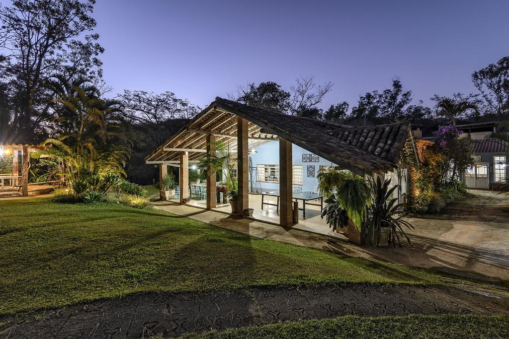
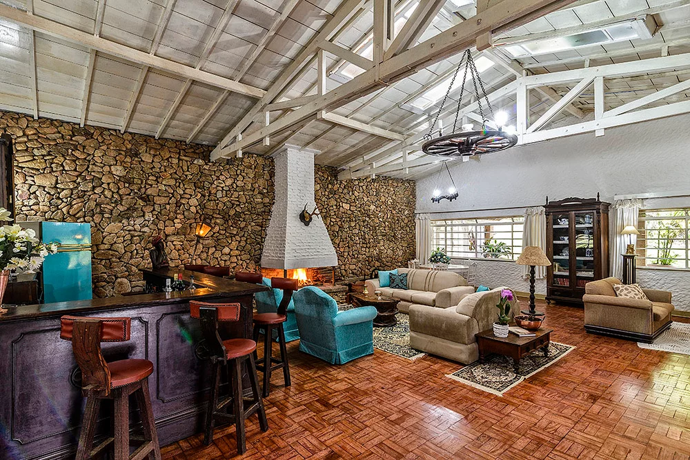
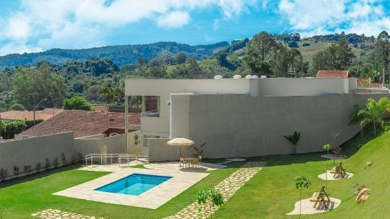
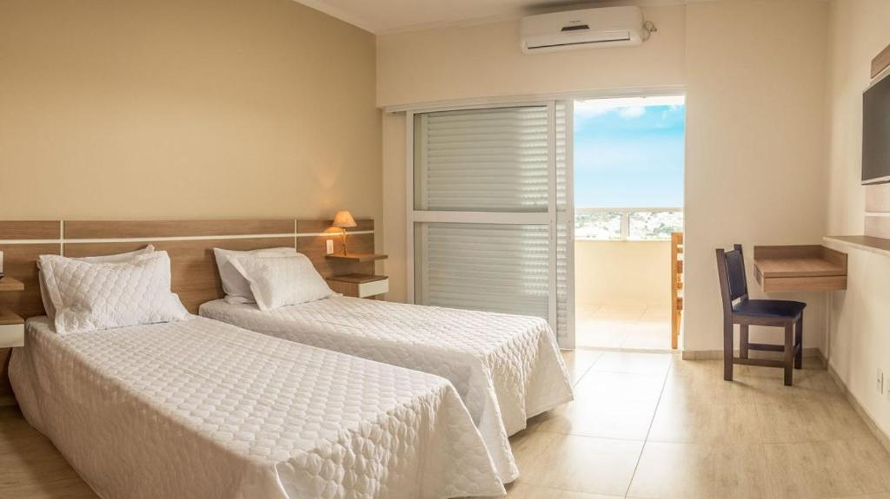
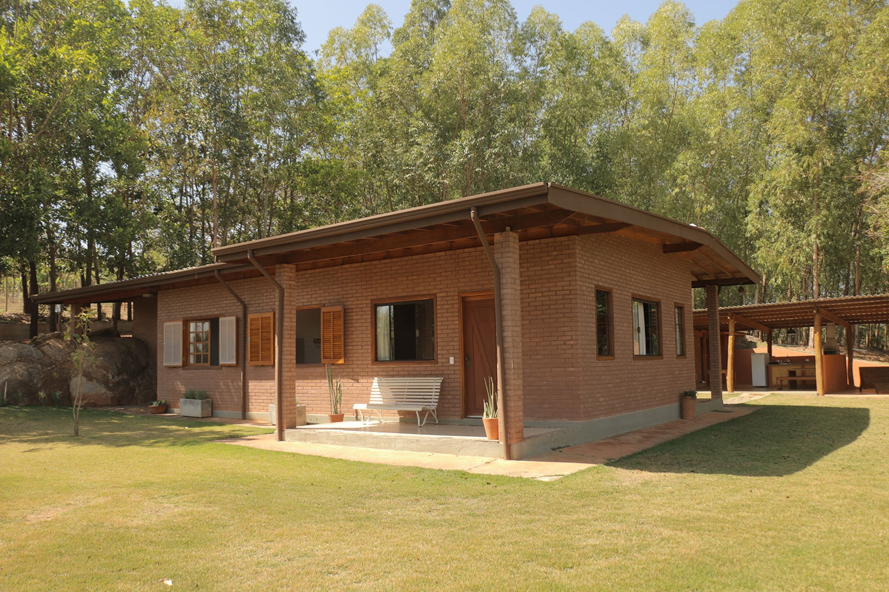
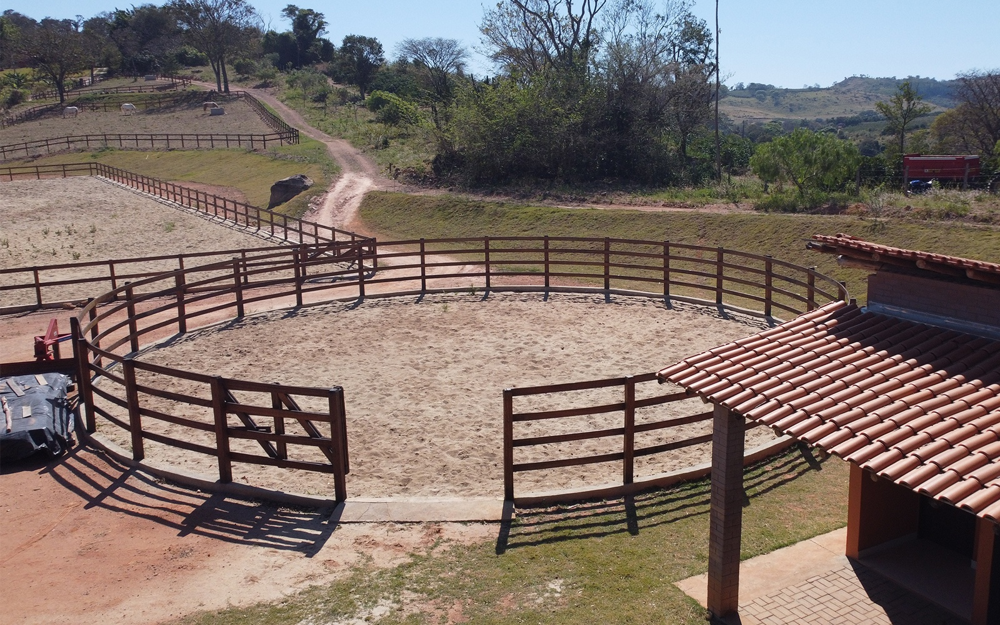
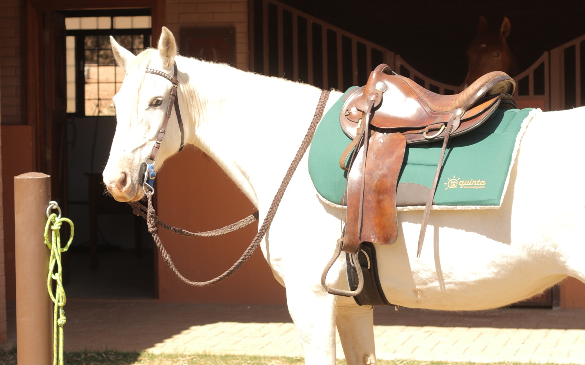
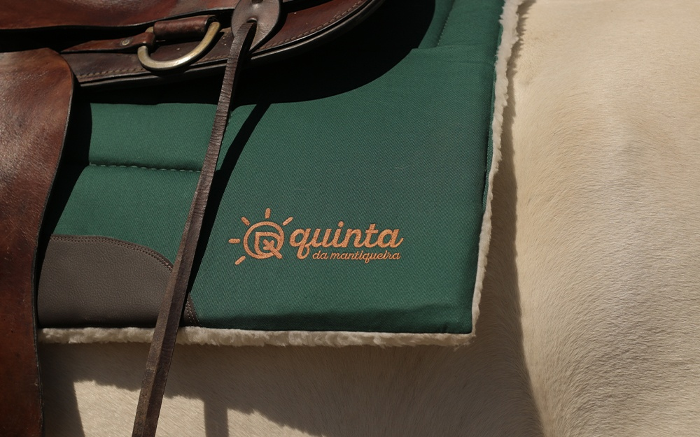

Lago da Dinda

Localizado em uma área privilegiada no município, o Lago Municipal é uma das principais atrações de Espírito Santo do Pinhal.
O local conta com ampla área verde em meio a uma mata natural, com árvores de grande porte.
Ideal para exercitar-se, caminhar, andar de bicicleta, fazer piqueniques com a família, meditar e relaxar, o lago possui também uma grande área de lazer com playground, academia ao ar livre, quadra de beach tênis e uma ciclofaixa de 830m.
Bom para passear, caminhar, levar as crianças para ver os patinhos e se alongar.
O lago é bem arborizado, conta com uma pista de skate, uma academia ao ar livre e quiosques no decorrer do percurso.
Teatro Avenida

O cine Theatro Avenida é patrimônio histórico, cultural e artístico de nossa cidade.
Existe por obras de três famílias pinhalenses: os Bartholomei, os Galeano e o Martins, que o construíram e inauguraram em 29 de Dezembro de 1927.
O cine Theatro Avenida foi, literalmente, palco de cultura e lazer durante décadas, pois era o local preferido para o encontro da sociedade pinhalense.
Filmes, peças teatrais, festas de formatura, conferências e outros eventos aconteceram ou foram transmitidos no espaço.
Plaça da Independência

A Praça da Independência e o ponto mais característico de Espírito Santo do Pinhal.
Recém reformada ficou muito bem iluminada, com bancos confortáveis por toda extensão, uma linda fonte iluminada e a magnífica Igreja Matriz do Divino Espírito Santo.
Ideal para um passeio com a família.
Alem disso é rodeada por casarões perfeitamente conservados, preservando a história de Pinhal.
Igreja Matriz
A partir de 1849, iniciou-se a construção da capela que em 1886 já tinha suas paredes laterais e dos fundos em taipa, telhado em duas águas, construída pelo Vigário Monte Negro recebendo da Coroa Portuguesa paramentos e a imagem de São Sebastião que permanece no altar assim como o crucifixo.
Em 1897 a Matriz recebeu a fachada frontal com torre, que permanece até hoje.
Em 1898 a igreja acolheu como doação o atual relógio, poli facetado e importado da Alemanha, ofertado pelo Capitão Leocádio Gomes de Faria e também o sino menor, com inscrição “Carlos Sontag I T U-5/5/1875” e o maior, colocado acima do relógio com a inscrição “oferecido por Casemiro Teixeira Vaz, ao Divino em memória de D. Pedro II, imperador do Brasil – CROUZET, HILDEBRAND – FOUDER A PARIS”.
Ambos provenientes da mesma fundição que fez os sinos da Catedral de Notre Dame de Paris.
Pousada Famiglia Barthô
 Situada em Espírito Santo do Pinhal – SP a 90 Km de Campinas, a Pousada Famiglia Barthô oferece Jardim, Piscina com aquecimento solar, Bar, Restaurante, Três trilhas para caminhada, Lago com patos, Pescaria, Fazendinha com animais e aves exóticas, Campinho de futebol gramado, Beach Tenis, Bicicletas, Brinquedoteca e outros.
Recanto Serra Nascente do Sol
 O Recanto Serra Nascente do Sol está localizado em Espírito Santo do Pinhal, uma cidade do interior de São Paulo, localizada a uma altitude de 870 metros.
Pinhal está situada na região mogiana, com clima favorável ao cultivo do café, fruto que é parte importante na economia da cidade.
A Pousada está localizada em região tranquila, silenciosa, mas não distante de tudo que você precisa: estamos a 900m do Centro da cidade, onde se situam várias empresas, comércio, supermercados, teatro, cinema, restaurantes, cafés e muito mais.
Além disso, você também tem opções de entretenimento dentro da própria pousada: 2 salas com TVs gigantes de LED, academia com acompanhamento profissional, serviço de bar e uma piscina com vista deslumbrante das serras que rodeiam nossa cidade.
O café da manhã é um de nossos grandes diferenciais, com estilo artesanal e preparado com extremo carinho para garantir a sua satisfação.
Para garantir sua comodidade, também oferecemos garagem fechada para seu veículo
Quinta da Mantiqueira
 Casas de campo aconchegantes, com bela vista e lindo pôr do sol, em uma propriedade agroecológica na Serra da Mantiqueira, com produção de hortaliças e café orgânicos.
Passeio a Cavalo
 Viva uma experiência inesquecível conhecendo a natureza de perto! Com nossos passeios a cavalo, você terá a chance de explorar a região, admirar as maravilhas da natureza e desfrutar de um dia tranquilo no campo.
Venha e viva essa experiência com a gente!

Nome:Carlos Alberto Barbosa Junior
RA:250121